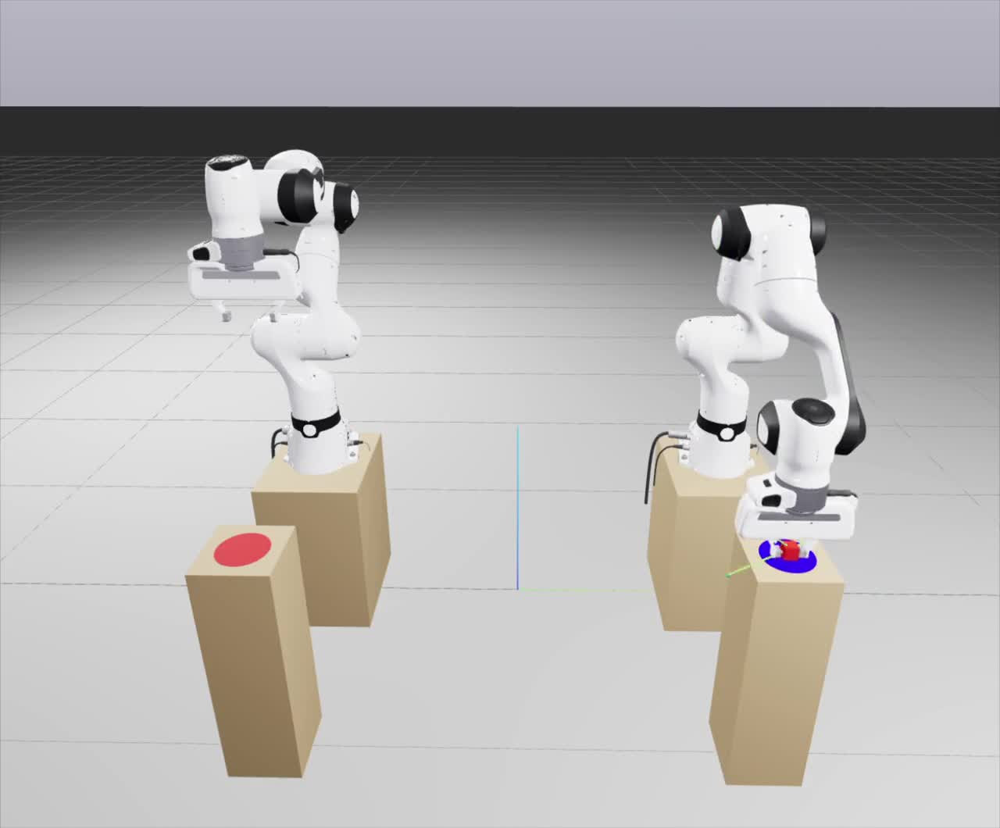
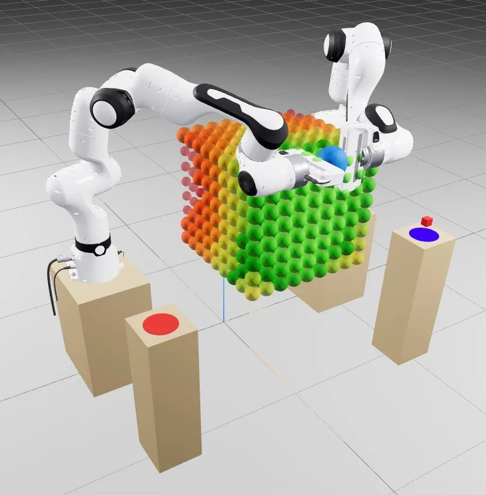

Robot learning
Dual-arm object handover
Two Franka Panda arms pass a cube mid-air between tables that neither can reach alone — workspace analysis, IK, motion planning and coordination in Drake.
- final placement error
- 9.1 mm
- pick → handover → place
- ≈ 20 s
- states in the task machine
- 13

- Robot 1 can only reach the start platform, robot 2 only the goal — the cube has to change hands in the air.
- I wrote the full pipeline: offline handover-pose search, IK, selective OMPL planning, grasp ownership and a 13-state coordinator.
- The complete sequence runs in about 20 s and places the cube with a 9.1 mm error.
- Python
- Drake
- OMPL
- Inverse kinematics
- Finite-state machines
01
The problem
Two 7-DOF Franka Panda arms stand on separate tables with a gap between them. The cube starts on a platform only the first arm can reach and must end on a platform only the second can reach. They have to meet in a shared workspace, hand the cube over without dropping it, and never collide with each other or the scene.
02
Architecture
I split the problem into three levels. One finite-state machine coordinates both robots, so the handover is always synchronised. Each arm plans its own path against a shared collision model. Each arm has its own controller that knows only its own state — centralised planning, distributed execution.
03
Key decisions
- Where to meet: the handover pose has to be reachable by both arms. I computed it offline by intersecting their reachable workspaces and load it at runtime — fast and validated in advance, at the cost of not adapting online.
- Where to plan: OMPL is used only for the approach to the handover, where the two arms are close and collisions are likely. Open-space pick and place use simpler trajectories, which keeps execution fast.
- How to grasp: contact-based grasping made the cube roll on the fingers and crash the handover. I switched to a kinematic attachment with explicit ownership, which changes from robot 1 to robot 2 at the exchange.
- When to switch states: on trajectory completion, which is simple and reliable with a kinematic grasp.

04
Results
In the nominal configuration the full 13-state sequence completes in about 20 seconds, with no collisions, a stable transfer and a 9.1 mm final placement error.
Next I'd randomise the cube's start pose over many runs to report success rate and error statistics, and bring back contact-based grasping to test slip during the exchange.
05
Resources
The repository was created by a teammate; the implementation on the linked branch is my work.